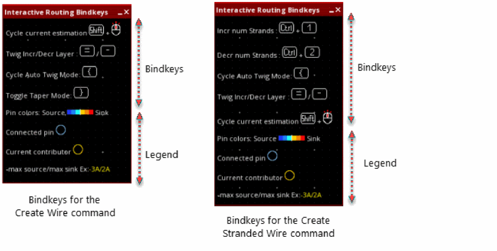
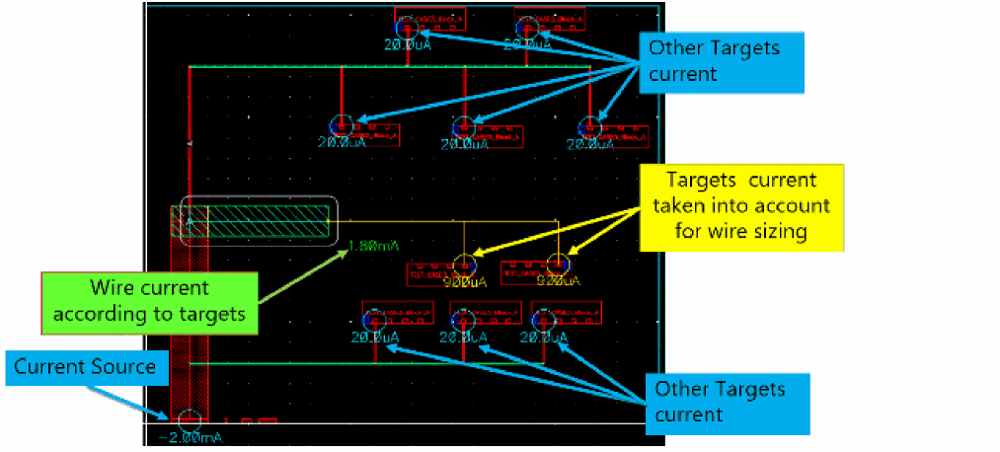

SDR Bindkeys and Visuals
When you start the Create Wire command or the Create Stranded Wire command, the Interactive Routing Bindkeys info balloon is displayed at the top-left corner of the layout canvas. This info balloon shows specific bindkeys related to SDR and a legend to understand the visuals that get displayed in the layout canvas during simulation driven routing.

The following visuals are shown on the layout canvas during interactive routing:
- Thermal map representation
- Yellow and blue halos around connected pins and current contributors
- Estimated current value close to the cursor
- Connection style
Legend to show pin colors source and sink

You can minimize the Interactive Routing Bindkeys info balloon and then maximize it when required. However, if you close the info balloon, it does not appear again. To view the info balloon again, go to another layout tier and then again open Layout EAD.
Related Topics
Return to top